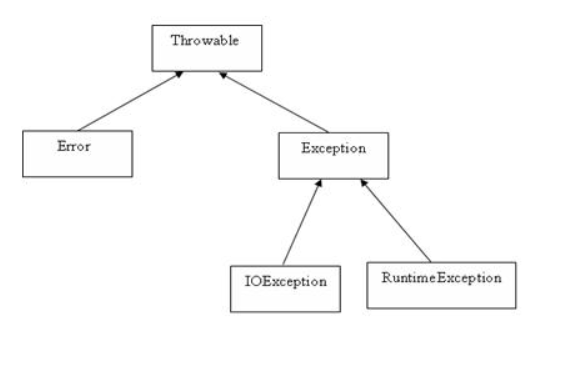

1.异常类大致结构:

2.Throwable是所有异常类的超类.
3.当程序可能出现错误(异常)的时候应该使用,使用关键捕获异常进行处理.
4.捕获异常结构如下:
1 public void test() {
2 int num1 = 10;
3 int num2 = 0;
4 try {
5 System.out.println(num1 / num2); // try可能出现错误的语句块
6 } catch (Exception e) { // 异常类型 并实例化一个异常类型e,用来对出现的异常进行说明
7 e.printStackTrace(); // 如果出现错误执行catch里面内容,否则跳过catch语句块
8 } finally {
9 System.out.println("永远都会被执行,(system.exit)特殊情况除外,"); // 无论是否出现异常都会执行finally语句块
10 }
11 } 5.有的函数声明定义的时候直接抛出了异常,name在调用的时候就需要捕获异常或者继续抛出异常.
1 public static void main(String[] args) {
2 try {
3 test(); //调用这个方法就必须捕获异常或者继续抛出异常
4 } catch (Exception e) {
5 e.printStackTrace();
6 }
7 }
8
9 //方法定义的时候抛出了异常
10 public static void test() throws Exception {
11 int num1 = 10;
12 int num2 = 0;
13 System.out.println(num1 / num2);
14 }6.自定义异常类,必须继承一个异常的父类:
public class ExceptionTest extends Exception{
@Override //这个是注解,表示这是重写的方法
public void printStackTrace() {
System.out.println("自己定义的异常类");
System.out.println("尝试一下如果程序没有出现异常,强制抛出这个自定义异常,可不可以捕获");
}
}7.尝试使用(捕获)自定义的异常类
public class Main {
public static void main(String[] args) {
try {
test(); //调用这个方法尝试捕获自定义异常
} catch (ExceptionTest e) {
e.printStackTrace(); //自定义的异常类重写了printStackTrace这个方法
}
}
//继续往上抛出异常
public static void test() throws ExceptionTest{
throw new ExceptionTest(); //强制产生一个自定义的异常并往上抛
}
}